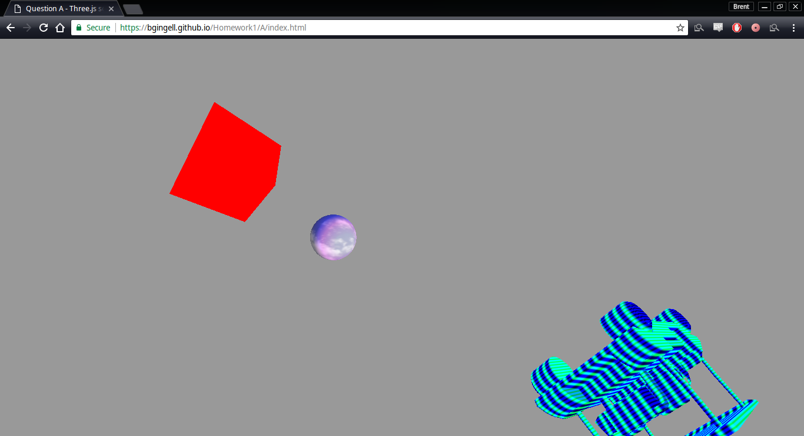
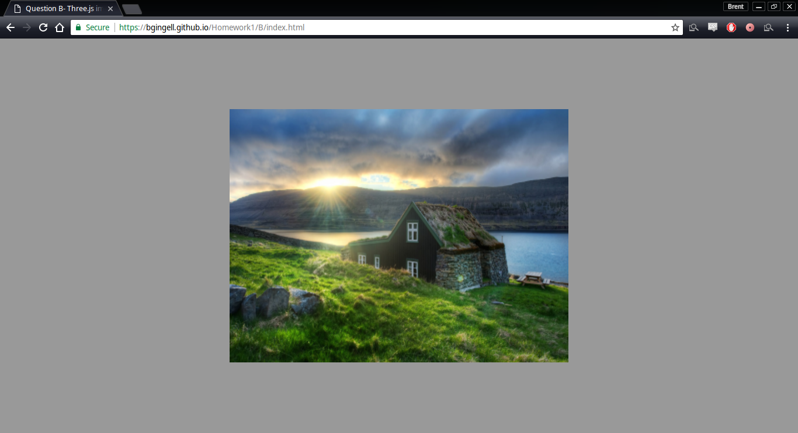
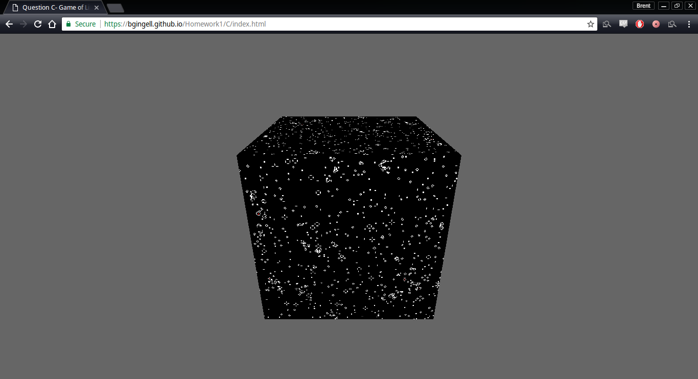
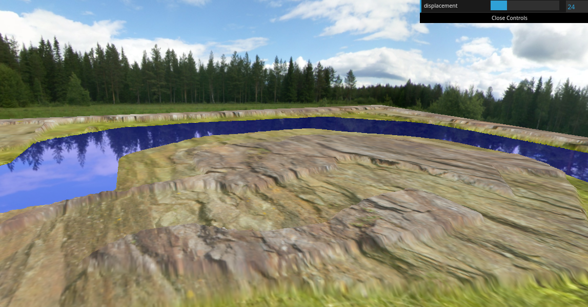
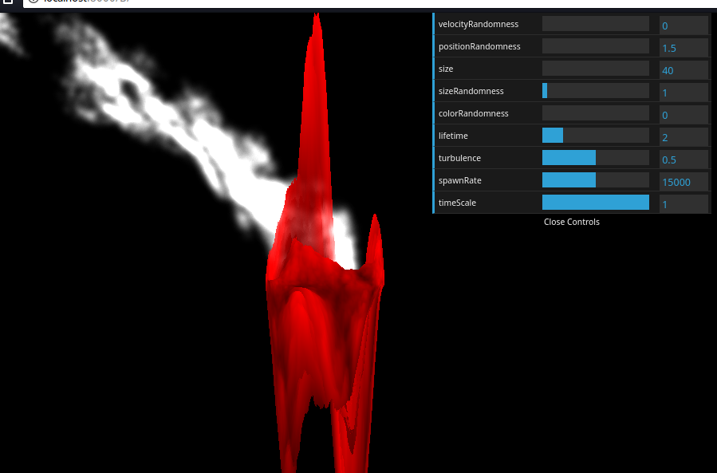
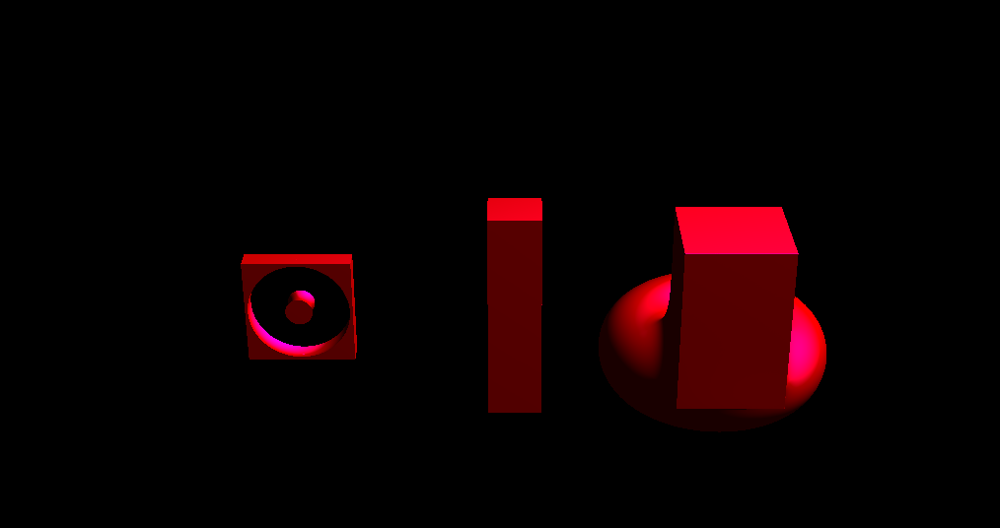

Interactive 3D scene
A Three.js scene with an imported model, lighting, textures, and camera controls.
View demo ↗I currently work at Check Point Software Technologies and am interested in the places where networks, hardware, and low-level software meet.
This site was made with AI, because at some point it seemed a little silly not to.
Working with
Network stacks
C++, Linux, and DPDK
Interested in
Systems performance
Hardware acceleration
Graphics and practical AI tools
Elsewhere
Selected coursework
This stuff happened to be preserved on this site when I remembered it existed.

A Three.js scene with an imported model, lighting, textures, and camera controls.
View demo ↗
Browser-based image processing implemented with shaders and interactive controls.
View demo ↗
Conway’s cellular automaton mapped onto the faces of a rotating cube.

A terrain scene using heightmaps, texture blending, a skybox, and orbit controls.
View demo ↗

A compact ray-marched scene built from distance functions and shader math.